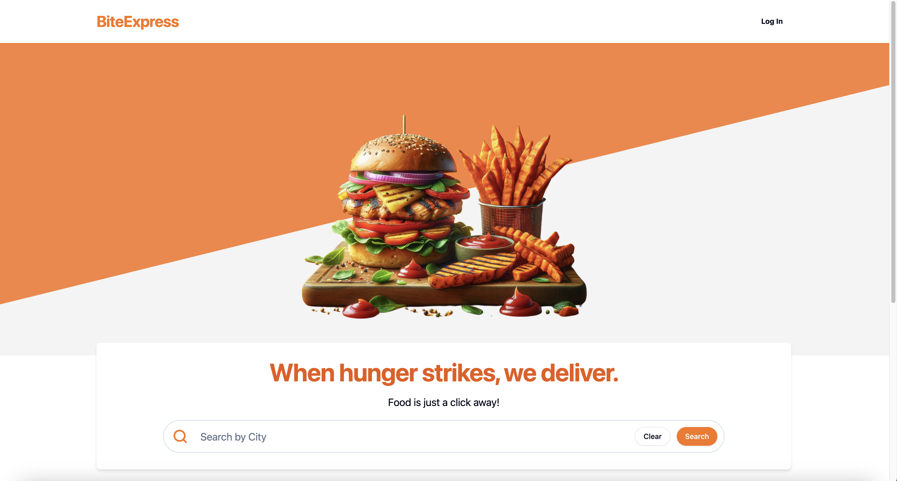
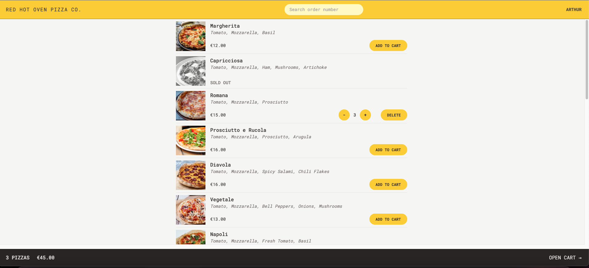

Hello, my name is Arthur Cavini and I’m a fullstack developer. You can check out my latest projects in my portfolio.
Here's what I've been up to lately.
Web Apps

Bite Express
Bite Express is a full-stack MERN app designed to make food ordering and restaurant management easy. On the
frontend, it uses React and TypeScript, with React Query for data handling, custom hooks, and
React-Router-Dom with the Render as You Fetch pattern for smooth navigation. Tailwind CSS is used for
styling, while Auth0 manages authentication, and Stripe handles payments. Cloudinary is integrated for image
management, and Vite powers the development process. Zod is used for schema validation, and React Hook Form
simplifies form management.
The backend is built with Node.js and Express, with MongoDB as the database, and Mongoose for data modeling.
Webhooks are implemented for real-time updates, particularly with Stripe for payment status. JWT is used for
secure token-based authentication.
Users can search for restaurants, filter by cuisine, place orders, and track deliveries in real-time.
Restaurant owners can create profiles, manage menus, accept orders, and update order statuses live. Bite
Express brings together a robust tech stack to provide a seamless experience for both customers and
restaurant owners.
The Split Bill Project
React application made for people to split the value of the bill with friends and keep track of it. It allows the user to add friends and split the bill with a simple but intuitive UI.


Order Pizza
It's a web application for ordering pizzas! It was created with React + TypeScript and uses a bunch of cool technologies, alongside custom hooks, the Atomic Design Pattern, the Render as you Fetch development pattern and a GeoLocation API to make it easier for users to input their address when ordering a pizza! For example, for data management I used Redux + Redux Thunk along-side custom hooks to fetch data from the GeoLocation API. The entire UI was created using the Atomic Design Pattern with Tailwind CSS.The main concern for this application was to create it using the newest methodologies and practices, including the Render as You Fetch development pattern, which was achieved using React-Router-Dom. Also decided to use Vite instead Create React App.
Contact me
Looking for someone to bring your ideas to life?
You can find me here